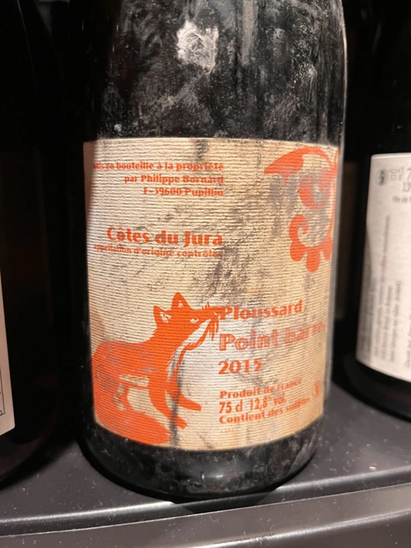

- Type
- Red Still, Dry
- Producer
- Philippe Bornard
- Vintage
- 2015
- Location
- France, Côtes du Jura AOC
- Grapes
- Poulsard
- Alcohol
- 12.8
- Sugar
- 5
- Price
- XXX UAH
- Cellar
- N/A
Ratings
There are no ratings of this wine yet. It’s waiting for the right moment, which could be today, tomorrow or even in a year. Or maybe, I am drinking it at this moment… So stay tuned!